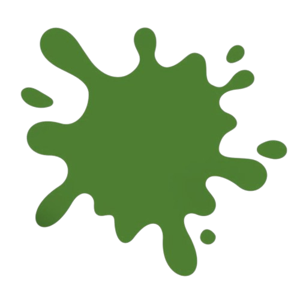
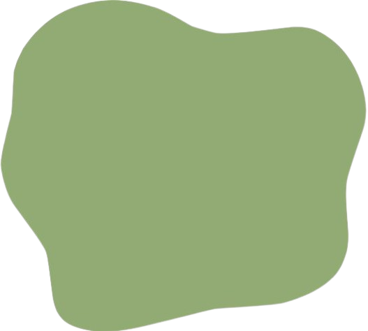
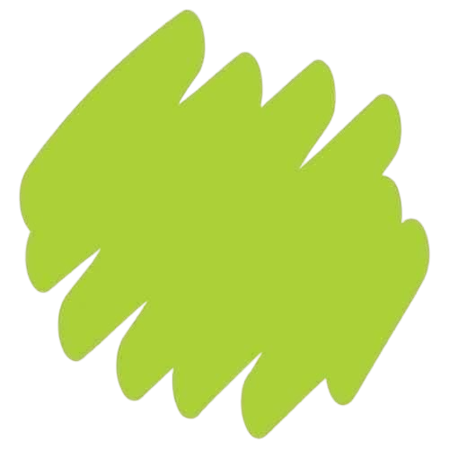
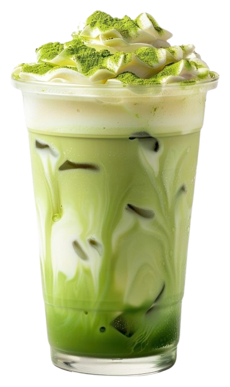

Soy un desarrollador y diseñador autodidacta apasionado por crear estructuras digitales sólidas. Mi camino en la programación no se trata solo de escribir código, sino de resolver problemas reales con herramientas modernas.
Desde el backend con Node.js hasta el pulido visual en CSS, busco que cada proyecto tenga esa chispa de innovación que lo haga destacar.
Una fusión inesperada de sabor y geometría. Experimenta la frescura técnica en cada sorbo. Diseñado para los que buscan lo extraordinario.
RESERVAR YA